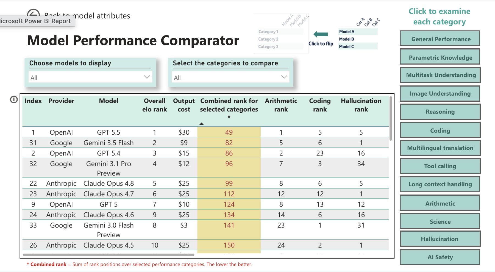

The problem
Every few weeks a new model claims to beat the last one. The claim usually comes with a cherry-picked chart. Before any team at MSD adopts a model for a real workflow — document translation, clinical case intake, regulatory QC — someone has to answer a less flattering question: on the benchmarks that actually matter to us, does this model hold up, and against what did we check?
That's the brief I picked up as a Research AI Scientist and carried forward into my current AI Engineer role: build a way to compare LLMs that's repeatable, sourced, and specific to the categories of work the company actually does — not just whichever benchmark the vendor's press release led with.
Elo-style ranking & model cards
The first piece was a ranking layer, not a leaderboard. Raw benchmark scores don't compose well across categories — a model that's 3 points ahead on MMLU and 8 points behind on GAIA doesn't have an obvious "winner." I designed an Elo-style (Bradley-Terry) system that runs head-to-head comparisons within each benchmark category and produces a relative ranking, the same mechanism chess ratings and LMSYS Arena use for exactly this kind of intransitive comparison problem.
Every model that goes through the process gets a model card: a short writeup of performance trends, where it's strong or weak by domain, and a read on enterprise readiness — the kind of thing a team lead can skim in two minutes before deciding whether to pilot a model. Those cards, plus the underlying scores, feed interactive Power BI dashboards so stakeholders can filter by domain and by core capability (reasoning, coding, multilingual, safety) instead of asking me for a one-off comparison every time.

The benchmark retrieval agent
Ranking and model cards are only as good as the numbers underneath them, and those numbers don't sit in one place — they're scattered across vendor blog posts, technical report PDFs, and public leaderboards, and they get quietly revised after launch. Chasing that by hand doesn't scale past a couple of models. So the actual data collection is a LangChain-based retrieval agent: given a model name, it works through 11 benchmark categories, searches and fetches until it finds a reliable score for each, and returns one structured record.
Trigger → deployment flow
New model name in SharePoint → Power Automate trigger → deployed agent runs → Bradley-Terry ranking updates → written back for the dashboards.
Internal loop
Receive request → cycle through each benchmark → search → fetch → rank by trust → found or retry → emit structured JSON.
What it covers
Agent design, in LangChain
Everything downstream of "call the agent" is a LangChain tool-calling agent, not one scripted loop — the LLM decides which tool to call next and when it's seen enough to stop, rather than following a fixed script.
The prompts behind it
No single "find the benchmark score" prompt — the agent runs a short chain of narrower ones, each doing one job, rather than one prompt trying to search, judge, and extract at once.
- Query reformulation. Given a model and a benchmark, generate a handful of differently-phrased search queries — vendor name, "results" vs "eval," technical-report phrasing, model-card phrasing — instead of one fixed query per benchmark.
- Source triage. Given a fetched page, decide whether it actually contains a usable score for this model and benchmark, and classify it as official, leaderboard, or third-party.
- Extraction. Given a source that passed triage, pull the score, unit, and any caveats into the schema fields — kept as a separate step so the model isn't judging and extracting in the same pass.
- Discrepancy note. When two trusted sources disagree, write a short note describing the conflict rather than silently picking one number.
What worked, what didn't
Worked
- Using two separate prompts — one to check if a page is relevant, another to pull out the number — instead of one prompt doing both. One prompt kept mixing up "this is about the right model" with "this has the actual score."
- Giving the agent one tool per job (search, fetch, classify) instead of one do-everything tool. It's easier to see what the agent tried and why when something goes wrong.
- Telling the agent clearly whether it found the score or ran out of attempts, instead of leaving that call to it. Otherwise it either gave up too early or kept searching way longer than needed.
Didn't work
- Using the same search query every time — different sources word things differently, so one query missed real results often enough that we had to try multiple phrasings.
- Trusting the short preview text in search results — it sometimes matched the wrong model version or a different test setup, so we had to open the actual page before trusting any number.
- Letting the agent quietly pick a number when two sources disagreed — sometimes it just averaged them instead of flagging the mismatch, which is worse than showing either number on its own.
Design decisions that mattered
- Search is bounded, not target-driven. Ten reformulated queries per benchmark is a safety ceiling, not a goal — most resolve in one or two. Letting it run longer only on obscure or newly-released models keeps the average request fast without giving up on the long tail.
- Fetch before trust. A number never gets recorded off a search snippet — the agent has to pull the full page before it counts as a source.
- Source trust is a hierarchy, not a filter. Official vendor material outranks public leaderboards, which outrank independent eval repos. When sources disagree, the agent keeps the official number and notes the discrepancy instead of picking silently.
- Blocked pages get skipped, not retried. Paywalls, bot-blocking, and JS-only rendering waste the search budget if retried — the agent falls back to the next result instead.
Structured output, not free-text JSON
The retrieval agent's output feeds a Power Automate flow with a Parse JSON step downstream — the kind of integration that breaks silently the moment a model decides to wrap its answer in a sentence, rename a field, or drop a null. Rather than trust the model to freehand valid JSON on every run, the response is bound to a Pydantic schema via structured outputs: the API constrains generation to the schema directly, so the shape is guaranteed before it ever reaches the parser.
AI Safety, Security & Ethics
The evaluation work sits inside MSD's AI Safety, Security & Ethics group, which extends the scope past raw capability. Two threads run alongside the benchmarking:
- Output safety. Evaluating models for harmful, biased, or unfair outputs — not just whether the model is capable, but whether it's safe to point at a real workflow.
- Agentic risk. As more of what we deploy is agentic rather than single-turn, the risk surface changes — prompt injection, remote code execution, and data protection become live concerns rather than theoretical ones. Part of this work is defining the guardrails that mitigate them before an agent ships, not after.